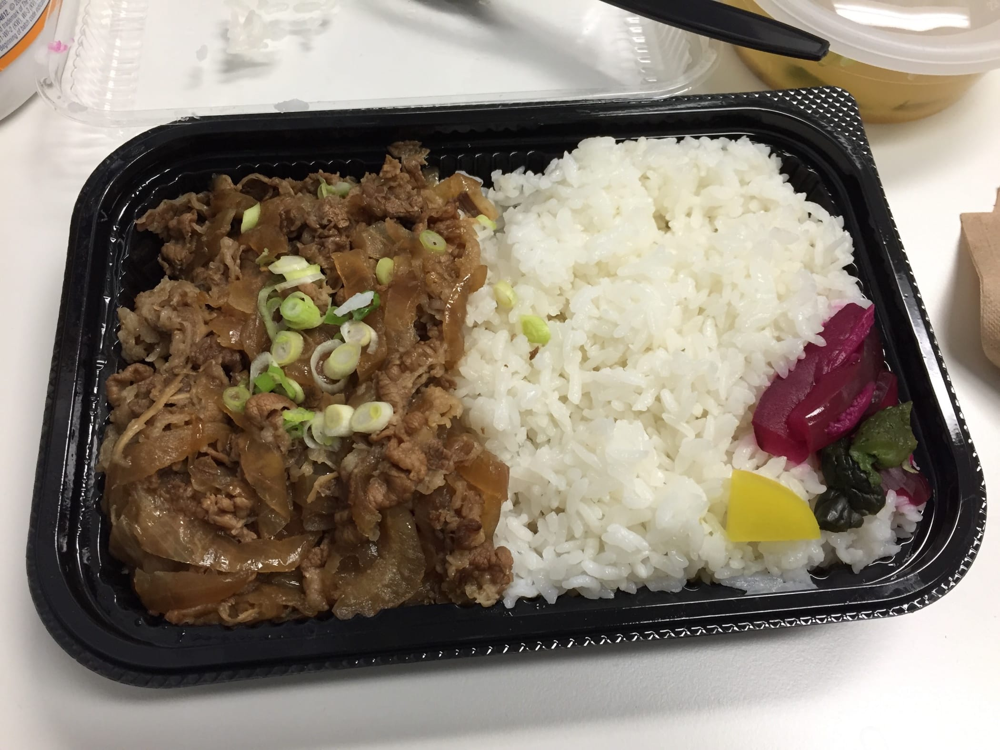
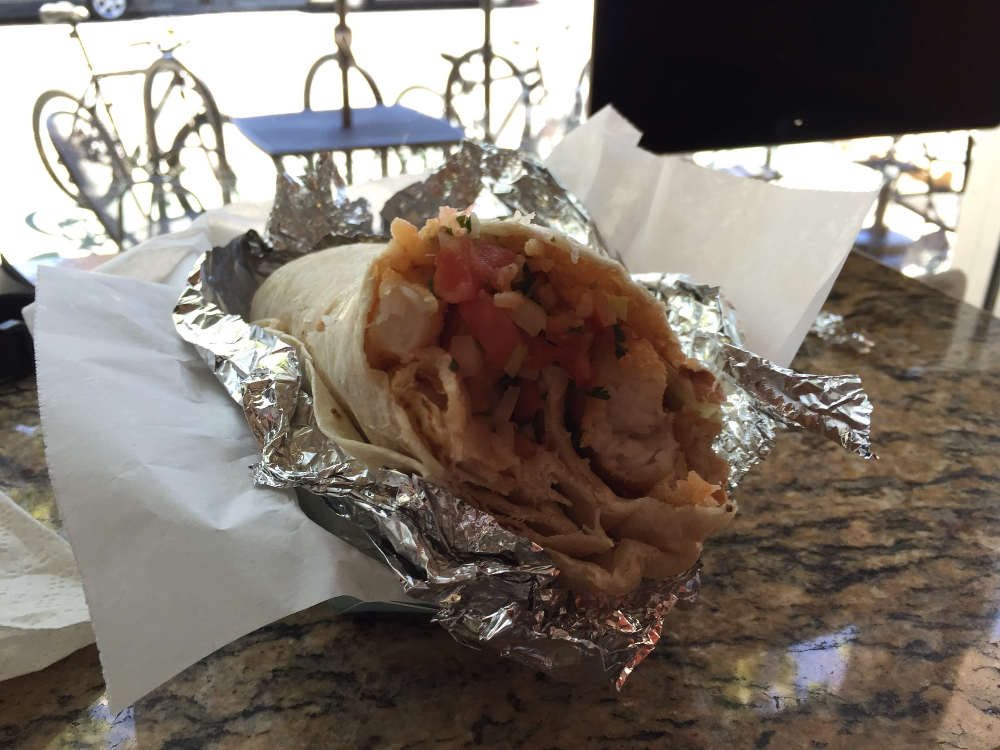
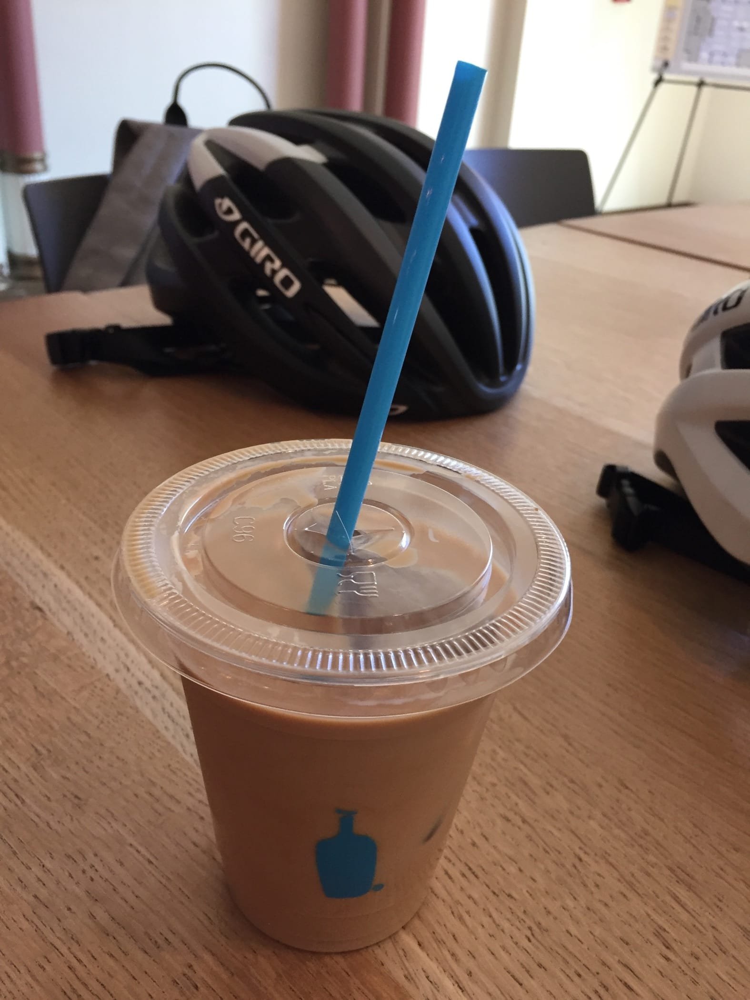
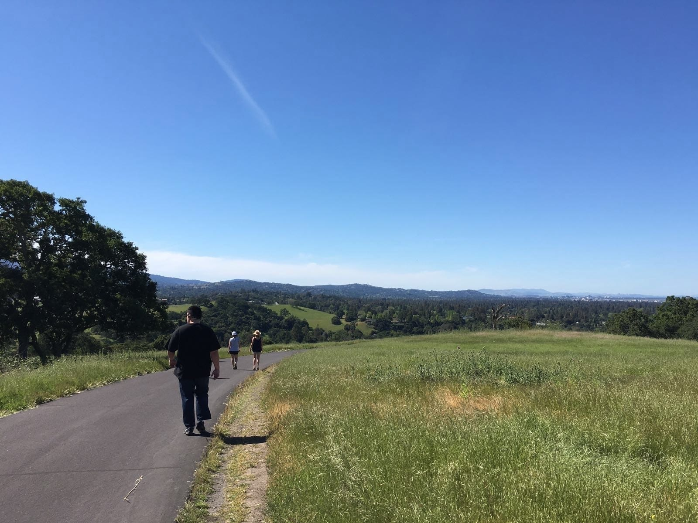
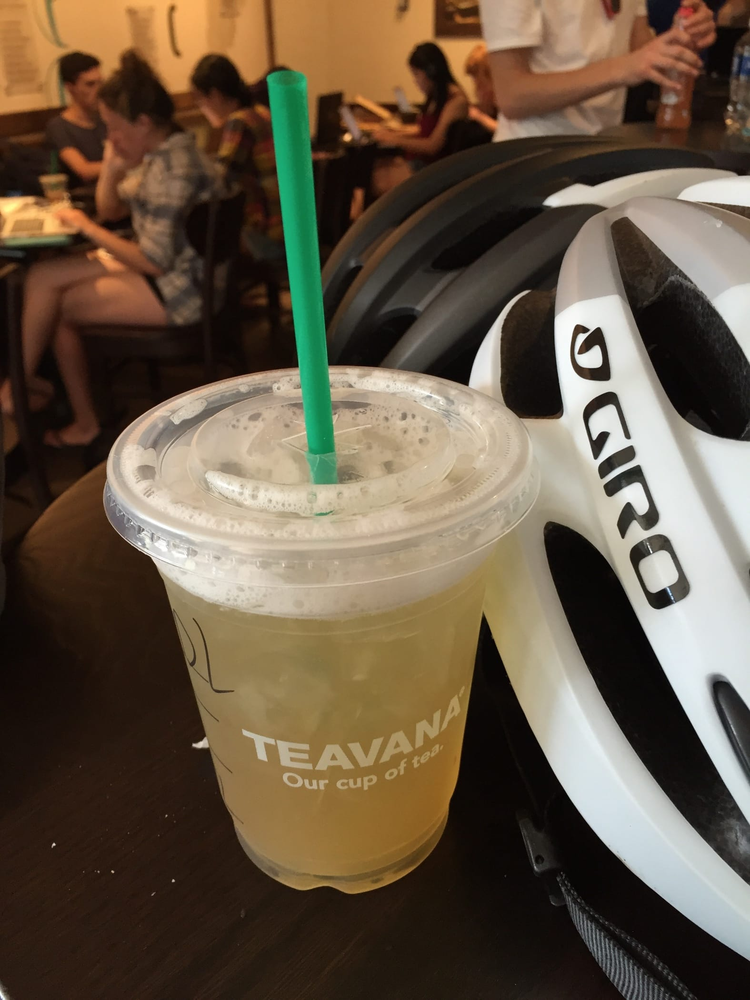

Sunday, 17 April 2016 at 8:32 PM
Weekly Log #3
Week 3 in SF!
UserTesting
On Monday, we went to UserTesting’s San Francisco office (Jurvis needed to get his Social Security matters sorted). The place is located near many startups such as GitHub and is accessible by bike from the hostel. I don’t have any photos of the office, except for what I ate for lunch.

Beef Sukiyaki Don from Kama O Deli. It’s a short walk from the office.
QA Testing
This week, we tried out QA testing, which is currently a manual process 🙁 - James brings out a lengthy spreadsheet detailing things we have to try out on whatever we’re testing and you can really fall asleep going through the tests.
The QA team is currently trying out automation with a framework called Calabash, written by Xamarin. It was really frustrating to work with it because certain things would not work, and documentation for this framework (or the syntax it used, called Gherkin) was very sparse.
Friday community service
On Friday, the company went for community service on the John McLaren park, with a BBQ party afterward.
Saturday
On Saturday, we went for a visit to Palo Alto. After having lunch and drinks, we went to visit Stanford University.

Had my first Burrito - Fish Burrito. It was awesome.

According to Jurvis - a Bay Area special, known as Blue Bottle Coffee. The ambience was great and the coffee was pretty good.
Stanford campus
Now on to Stanford.
The hover building in Stanford.
The buildings resident on the campus look aged and bring about a kind of grandeur in its detailed wall textures and murals. What we went for, though, was a hike at the Stanford Dish, which is a hill designated as a research area for the university.
The Dish is named after the satellite dishes present on the hill.

A view of the winding road on the hill.
I had a great sense of achievement after the hike - I would usually have stopped and slowed down way earlier, possibly at the first half-hour of the hike, but I managed to go on at a steady pace (with some rests, of course! 😁). The roads present a great faraway view of other hills and trees, with some providing a bird’s eye view of the Stanford campus. If you do ever hike here, remember to bring a lot of water.
It slightly warm at the Dish that day - it was around 25°C (yes, that’s 11°C lower than Singapore’s record temperature, but it would have been better if it was say 20°C).

A cup of Iced Peach Green Tea Lemonade at Starbucks. (its name is too long, took me a while to recall it)